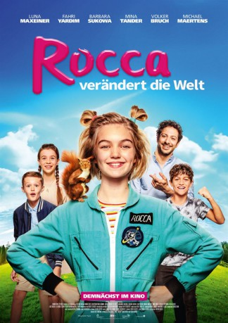
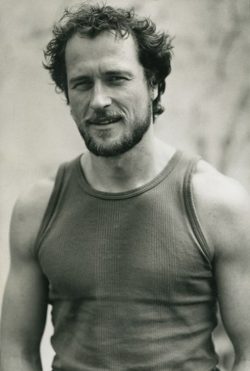

#11595 Rocca verändert die Welt
 
 IMDB-Wertung: 7.5 / 10
IMDB-Wertung: 7.5 / 10  Metascore: 0
Metascore: 0 
Mutig, witzig, unverwechselbar: Das ist Rocca. Rocca ist elf Jahre alt und führt ein eher ungewöhnliches Leben. Während ihr Vater als Astronaut aus dem Weltall auf sie aufpasst, lebt Rocca mit dem Eichhörnchen Klitschko zusammen und geht zum ersten Mal auf eine normale Schule. Dort fällt Rocca durch ihre unbekümmerte und unangepasste Art sofort auf. Angstfrei stellt sie sich den Mobbern der Klasse, denn für Rocca steht Gerechtigkeit an erster Stelle. So versucht sie auch ihrem obdachlosen Freund Caspar zu helfen und nebenbei das Herz ihrer Oma zu gewinnen. Immer optimistisch, beweist Rocca mit ihren neuen Freunden, dass auch ein Kind die Kraft hat, die Welt zu verändern.
Jahr: 2019
Dauer: 101 Minuten
FSK: 0
Land: Deutschland Studio: Warner Bros.Tonspuren: - , - ,
Untertitel:
Auflösung: 1080p (1920x800) Größe: 6901 MB
Genre: Drama, Komödie, Abenteuer, Familie
Regisseur: Katja Benrath
Drehbuch: Hilly Martinek
Soundtrack: Annette Focks
Darsteller:
 Barbara Sukowa als Dodo
Barbara Sukowa als Dodo Mina Tander als Frau Behrendt
Mina Tander als Frau Behrendt Fahri Yardim als Casper
Fahri Yardim als Casper Michael Maertens als Schuldirektor Klein
Michael Maertens als Schuldirektor Klein Volker Bruch als Henning
Volker Bruch als Henning Lena Stolze als Gertrud
Lena Stolze als Gertrud Hedi Kriegeskotte als Felicitas
Hedi Kriegeskotte als Felicitas Milena Dreißig als Regina Ross
Milena Dreißig als Regina Ross-  Markus Knüfken als Roland Ross
- Margret Völker als Obdachlose
 Kailas Mahadevan als Sanitäter Emir
Kailas Mahadevan als Sanitäter Emir- Luna Maxeiner als Rocca
- Caspar Fischer-Ortmann als Max
- Luise Richter als Lila
- Leo Knizka als John
- Cordula Stratmann als Frau Hartholz
 Detlev Buck als Taxifahrer
Detlev Buck als Taxifahrer- Claire Wegener als Amely
- Annika Vieider als Zoe
- Nevio Wendt als Tom
- Marta Laubinger als Philippa
- Natalya Bogdanis als Andrea
- Ivan Doan als Dimitrij
- Hendrik von Bültzingslöwen als Lehrer 5A
- Krystian Martinek als Familienrichter
- Bo Hansen als Reporter
- Lars Nagel als Obdachloser
- Peter Badstübner als Obdachloser
- Robin Guillaud Bongarts als Obdachloser
- Johannes Klaußner als Sanitäter Achim
- Axel Benrath als Sanitäter Stefan
- Bernd-Christian Althoff als Oberarzt
- Linda Zervakis als Nachrichtensprecherin
- Nela Schmitz als Kindermädchen Julia
- Karin Heine als Ältere Dame
- Holger Dexne als Herr Krämer (uncredited)
Datei: X:\2019(N-Z)\Rocca verändert die Welt (2019, FSK0, 1920x800).mkv seit 02.08.2019
Festplatte: HD 2018(G-Z)-2019(A-Z)
 Es gibt insgesamt 62 Filme in der Gruppe '2019(N-Z)'
Es gibt insgesamt 62 Filme in der Gruppe '2019(N-Z)'